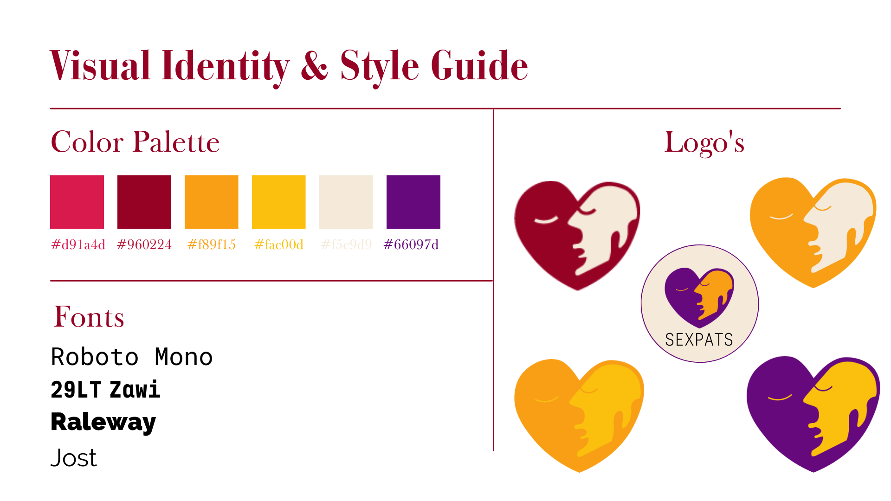

Made with
Drag & Drop Website BuilderThis website and its specific content was created by:
Emily Tajima (ID: 212079): Sensuality
Korina Milatić (ID: 211971): Connection
Ralitsa Nikolova (ID: 210474): Acceptance
Zoë Wals (ID: 212006): Health
Vision: In a world where we are under constant pressure to find our perfect match, we believe encouraging and destigmatizing casual, consensual & possibly kinky connections could benefit lonely and lost expats in terms of health, confidence, and settling in the new place they want to call home now.
Sensuality: A common misconception: Sensuality does not equal sexuality. It goes beyond the act of physical intimacy. Sensuality describes the experience of our bodies and the world surrounding us, which requires an awareness of all our senses. Sexpats presents opportunities to everybody to reflect and get in touch with individual needs and wants to improve the quality of (non) sexual connections in the long run.
Connection: Humans require connection because it satisfies our need for social interaction, offers emotional support and a sense of belonging, and significantly improves both our mental and physical health. Sexpats sees the importance in human connections, therefore is focused on building networks and social interactions that helps customers feel like they’re part of something bigger than themselves.
Acceptance: To be an expat means to be a foreigner in a place you want to call home. Lacking the knowledge of how people from different nationalities behave in the dating world can cause a clash of cultures and lead to feelings of alienation and misunderstanding. Sexpats brings people together because we see the importance of embracing and accepting each other's cultural differences.
Health: Not the very first thing that would come to mind with getting laid, but health is something very important for expats. In the forms of being in a new environment it might be stressful for expats and they may forget to look after themselves. We want expats to be healthy in the physical, mental and sexual way.
Persona:
Background: Ruben, age 27, is an ambitious and hardworking young man who moved to the Netherlands to pursue a more promising future. He graduated from university a few years ago with a degree in Marketing and Communications. In the duration of his study, Ruben focused mainly on his course and gaining the necessary knowledge to be a successful specialist in his field. His unemployment has made it difficult to create connections, which has been a source of stress and isolation. Ruben currently works as a barista until he finds a suitable job for his professional skills. Goals: Ruben's primary goal is to find a stable job as a Marketing Consultant in Amsterdam. Moreover, as a young individual whose life is before him, he is curious to discover the culture and learn more about the Dutch people. Ruben doesn't want to settle down just yet. Instead, this young man is interested in casual, consensual & possibly kinky connections to take his mind off his busy routine. Challenges: Ruben's goal is to keep prospering in his field. Unfortunately, he has yet to find a job in his area of work, making the Netherlands a very stressful and lonely place to which he is not accustomed. Due to the current circumstances, Ruben's initially laid-back, outgoing, and adventurous personality has turned into a shell of what it used to be. Motivation: During sexual acts, the body releases endorphins and oxytocin, which induce feelings of relaxation and connection while helping to prevent anxiety and depression. Thus, Ruben is passionate about engaging in noncommital rendezvous to feel recharged to tackle his biggest struggle - finding a job in Marketing and Communications. Important behaviors: In his spare time, Ruben searches for job offers, and when the opportunity arises, he goes on interviews. On most days, he works as a barista at a local touristy cafe, and when he is available, Ruben likes to travel around and explore the country. He and his friends go out for the weekend. Consumer Insights: Ruben spends significant time on social media platforms like Facebook and Instagram to stay connected with friends and family back home and discover new places and events in their new country of residence. He uses dating apps and online platforms to meet new people but is cautious regarding his safety and privacy.
A Typical Day for Ruben: 7:00 AM - The alarm goes off, and Ruben gets ready to work.
8:00 AM - Ruben leaves his studio and cycles to the local touristy cafe where he works.
8:30 AM - He prepares the cafe for customers.
9:00 AM - Ruben officially opens the cafe.
12:00 PM - While Ruben enjoys his lunch break, he scrolls through Instagram and chats with friends.
12:30 PM - Ruben goes back to work.
3:15 PM - Ruen goes on a 15-minute break and spends it on social media again because baristas rarely take breaks together, depending on how busy it is.
5:00 PM - Ruben heads home after a long day at work.
6:00 PM - Ruben cooks dinner
7:00 PM - Ruben eats dinner alone.
8:00 PM - Ruben looks for a job and applies for suitable positions.
9:30 PM - Ruben watches TV and goes to bed after.

Colour Palette:
#F5E9D9 The beige is used for calming contrasts within our colour palette, since it is supposed to have a warm and welcoming effect.
#FAC00D The saturated yellow has a light, uplifting, playful and stimulating effect.
#F89F15 The bright orange evokes happiness, sense of refreshment and also relates to the origin of our brand and its signature colour (The Netherlands).
#960224 For a sex-related brand, of course there has to be a shade of red in the colour palette. Red symbolises heat, activity, passion, sexuality, love and joy.
#D91A4D The pink radiates romance, delicateness and a charming energy.
#66097D The vivid purple reflects sensuality and mystery.
Font Choices:
Roboto Mono / 29LT Zawi, Raleway, Jost
UX Patterns: The carousel on our landing pages welcomes every visitor with heart-warming, connection-related images and a specific value of our brand.
We chose to implement the image carousel to introduce the visitor to our website in an attractive way, since looking at visuals preferred over static text and endless paragraphs.
Furthermore, scrolling down, visitors see our brand vision. The brand vision is headlined with an intriguing slogan, purposely in two of our fonts of choice (Raleway, Roboto Mono).
Most importantly, the paragraph of the brand vision is visually supported through a small and subtle video in the background. We lowered the opacity on the video to not distract the visitor and just make it a subtle, visually pleasing addition and more interesting background.
We choose the video of the clouds to visualize the “expat” and “connections all over the world” aspect of our brand, but also to underline the “lightweight feeling” of love and excitement we stand for as a brand. The paragraph closes with two buttons that include different calls-to-action: One to directly lead the visitor to our sign-up page, the other to direct the visitor to our about us page to cover any additional information.
We purposely choose to keep the overall look of the website more on the light and colourful side, because we actively try to avoid the overly sexual appearance of other common dating platforms. Although we openly promote sexual connections, we are catering to young professionals and adult expats that are interested in finding a partner for sex or their connection of choice, but they do not want to visit websites that necessarily look like it.
Therefore, we decided to limit the use of colour and to maintain the lighter look of the website in general.
The top horizontal navigation menu ensures that the visitor has a clear overview of the most important things about our brand and is able to intuitively navigate through our website at all times.
We choose six different navigation tabs: Home, About Us, Contact, Crowdfunding, Corporate and Sign Up. Home and Corporate are self-explanatory.
About Us includes all information regarding the team, our values and the purpose we serve as a brand. To make it easy to understand, we choose three icons (globus for cross-cultural, international connection / light bulb to communicate literal enlightenment and learning / smiley for love, joy and happiness – no matter if it is platonic or sexual) that represent what we can provide our customers with.
We chose to implement a horizontal 4-image-gallery with fruit-themed pictures to tie it together with our Instagram posts where we already used the fruit theme repeatedly. The fruits symbolise freshness, health and are also subtly sexualised within our posts and across our website.
To visually connect our team information with our contact information, both parts are divided into 4 blocks and shaded in one of our brand colours (orange, #F89F15).
The separate contact tab is intended to make it quick, easy and accessible for people that are curious and interested in directly contacting us, ideally to discuss a possible investment in our brand.
We choose to add this tab, because it reduces the distance and time potential investors need to spend on our site in order to know how to reach out to us.
Within the crowdfunding tab, we obviously elaborate on why we are worth every penny of investment. We imagine our brand to still be a work in progress, therefore the form to sign up serves the purpose for future members of our community to be part of our development and stay in the loop of things, until we reach a point where we can provide the finished app.
The form is visually supported through a paradise-like image, that is intended to evoke positive, dreamy feelings and touch upon the “international” and “expat” aspect of our brand.
The form is followed by a funding tier plan, that we intendedly kept short and compressed to make it easily understandable what we are looking for in additional funding.
Context of The Marketing and Communication Campaign Expats are usually individuals who have chosen to relocate to a different country for numerous reasons, such as better opportunities for professional development and a better standard of life. However, turning your back on everything you have ever known and starting anew in a different country is a scary and stressful experience. Expats are curious to discover the culture and get to know the natives but find it challenging to create an environment or socialize. Our target audience is lonely expats looking for an intimate partner to engage in casual, consensual, and possibly kinky connections but who have no knowledge of how to seduce people from different cultures. The goal of Sexpat's social media campaign is to introduce lonely single expats to our brand and educate and entertain them. We want our target audience to feel excited, hopeful, and confident through finding partners in their new environment. Thus, we have created four differently themed days branded with our values and targeted to expats. Expats are often overridden with stress and have a high chance of experiencing feelings of alienation and pressure to find the right match. Unfortunately, their lack of knowledge about how to seduce people from different cultures prevents them from enjoying their time here and engaging in flings. Hence, we believe that encouraging and destigmatizing casual, consensual, and possibly kinky connections could aid lonely and lost expats in terms of health, confidence, and settling in the new location. Channels and Promotional Activities Channels: We created high-quality content that our target audience enjoys watching on Instagram and Facebook. Promotional activities: We posted traditional posts, carousel posts, and reels on Instagram and Facebook. Each posting day had its designated theme - Speak and Spit Mondays, Culture Clash Wednesdays, Fun on Fridays, and Safe Sex Saturdays. Reflection Week 1 Instagram: It was a successful week driving traffic to our Instagram page. The posts on Monday and Saturday performed better than those on Wednesday and Friday. However, the reach decreased with each post. We posted two traditional Instagram posts with fewer graphics and more text on Monday and Wednesday and two carousel posts on Friday and Saturday. Both carousel posts were informative and supported by illustrations or pictures. However, the carousel post with pictures outperformed the previous three. Due to the interactivity of the carousel posts, the audience engages more with them, and users spend more time looking at them than at traditional Instagram feed posts. Hence, the algorithm is informed that our target audience finds our content relevant and intriguing, which may result in more people seeing our posts on their feeds. Facebook: Our team linked our Instagram page to our Facebook page, so the posts were automatically uploaded to Facebook. We spent little time on our Facebook page and drove a little traffic. We had minimal reach with our posts, and it varied between three and eight people. Surprisingly, the post on Friday, the carousel with the illustrations, was the most reached - 15 people. Nonetheless, we did not boost any of our posts. Hence, they did not reach as many people as they would have if we had used this option and the 'reach' feature. Week 2 Instagram: This week, we experimented with reels that followed the assigned theme. The reel on Monday was an animated post with no sound, whereas the reel on Wednesday was a still one with suitable music for the post. The animated reel got more likes, but the reel supported by audio got more views. Therefore, people engage more with reels containing audio because of the emotional engagement they receive. Even so, posts with moveable visuals or still posts with audio are not considered the most attention-grabbing reels. Hence, we decided to proceed with traditional posts and create reels based on current trendy TikTok videos. The post on Friday was a traditional post. However, we used a bigger picture that would take up more space, added a few designs and very little text. Furthermore, it reached the most people out of every post for the week. The post on Saturday was a carousel consisting mainly of text on a background design. We concluded that the posts where the main focus is a picture supported by few designs and less text are the ones the audience interacts with the most. Facebook: The same tendency with the reels on Instagram can also be observed on Facebook. The reel on Monday, which was only visual, reached five people and was viewed 14 times. However, the reel on Wednesday, which was still but supported by audio, reached 60 people and was played 60 times. Therefore, the audience on Facebook is also more interested in audio and visual posts rather than only visual ones. The traditional singular post on Friday reached three people more compared to the one on Saturday, which was multiple pictures consisting mainly of text. The results can be consequences of the traditional singular post being a big picture, making it more attention-grabbing. Week 3 Instagram: Since this was the last week of our Marketing and Communication campaign, we decided to post one more day than previously scheduled. The posts on Monday and Wednesday followed the same pattern as the first week; expectedly, the posts with less text performed better. On Friday, we posted a traditional singular post again. However, this one had images used in the design and less text and performed as well as the post on Monday. The post on Saturday was a carousel but with text only again. However, it reached more people compared to the post on Wednesday, which was a traditional singular. We posted a reel using a CapCut template inspired by a trend on TikTok. It reached more people than the posts, predominantly with text, but less than the ones on Monday and Friday. Facebook: The usual posts performed relatively the same as Week 1, reaching fewer people. However, the reel reached 200 people and was viewed 209 times. Therefore, using trendy TikToks to create our promotional content worked out perfectly for Facebook. Expectations Regarding meeting our objectives, we expected that it would be more attainable to accomplish our reach objective for Instagram - reaching 500 people. However, our reach at the beginning of Week 4, after we finished posting, was 230 people, almost half the goal we had set. Also, we expected our posts to receive more engagement when promoting them on stories; however, this was not the case. Moreover, we did not have an assigned theme initially, but after we saw the order of colors for the posts we had already published, we realized that it would be a good idea to keep up with the theme. Since we started very promisingly, we expected to continue with the same success and increase our reach. However, the engagement and reach on our posts decreased, and we could not figure out the cause of it. Hence, we tried promoting them on stories, but it was not helpful. Learning Points Reels: As mentioned in Week 2, we decided to try out the reels feature because reels are prominently displayed on Instagram's Reels tab, making them more discoverable to people who may not be following the brand, and they have grown in popularity, with many users actively searching out and engaging with Reels material. However, we noticed that our reels were not performing better compared to our regular posts. The Monday reel was an animated post with no sound, whereas the Wednesday reel was a still with suitable music for the post. The still reel with supporting audio reached more people due to the emotional involvement people acquire; they interact more with reels featuring audio. Nonetheless, the reel we posted in Week 3 outperformed the other two because it was trendy and resonated with the audience better. Facebook Has a Different Algorithm: Although we would publish identical posts simultaneously on Instagram and Facebook with the same caption and hashtags, the posts on Instagram would perform significantly better than those on Facebook. We observed that videos performed better on Facebook, primarily if they are supported by audio. For example, through our last reel, we reached 334 people and achieved an engagement of 237, far more than we expected. Additionally, keeping our brand visible on Facebook would also require funding the posts. Carousel Posts: After Week 1, we concluded that carousel posts also drive more traffic because both carousel posts were informative and supported by illustrations or pictures. However, the carousel post with pictures outperformed the one with graphics. Carousel posts offer more creativity and flexibility regarding the content that can be shared and have higher engagement rates than single-image or video posts since viewers are more likely to spend more time interacting with the post by swiping through the carousel. Posting Days: We have created designated posting days, and each has its specific theme - Speak and Spit Mondays, Culture Clash Wednesday, Fun on Fridays, and Safe Sex Saturdays. Our set posting time was Monday - noon, Wednesday - either 1:00 PM or 7:00 PM, Friday - 10:00 AM, and Saturday - either 11:00 AM or 1:00 PM. Although we were not always available to post at the selected time, we did it close to what we had assigned. Furthermore, we have observed that Instagram posts that would frequently reach more people were published on Mondays and Fridays. Most of our audience takes a lunch break between 11:00 AM and 12:00 PM. While socializing with their coworkers, they are more likely to scroll through their social media feeds. Because of the limited time frame, sharing something with which people can easily connect would be acceptable. Hence, posts on Mondays were short text over colorful backgrounds, and those on Fridays were more picture-centered. Picture-centered posts: As previously mentioned in the reflection, mainly picture-centered posts with little to no text have more engagement and drive more traffic to our Instagram page, compared to posts predominantly with text and illustrations. Our target group is young expats between 25 - 35. Therefore, posts with more text or graphics would not be as entertaining as posts with less text and more pictures. Instagram's algorithm prioritizes aesthetically appealing content and promotes posts that are more likely to be interacted with. Hence, images in postings are more likely to be seen by a larger audience, resulting in increased engagement rates. Future Planning Captivating Proposition In the span of these three weeks, Sexpats offered only suggestions and ideas for expats on how to adapt to new cultures and lead a healthy and prosperous sex life. We used this time to introduce our brand to the audience. If the project is to be continued, our brand will create its first solid offer to attract customers. An effective marketing strategy must have a concrete proposal that gives customers a reason to choose our brand. It may include a compelling cause for customers to act immediately, such as a limited-time sale. Customers will be more likely to take advantage of the deal if they are excited about it. Slogan Furthermore, to make our brand more memorable, we will create a hook that will distinguish Sexpats from other brands that offer similar products or services. For example, a slogan can go alongside our unique value proposition, making the brand stand out and positioning us as the best option on the market. Ultimately, a slogan would be a significant additional component of our marketing and communication strategy since it helps establish a lasting and distinguishable impression of our brand and the products and services it offers, promotes our branding, and develops an emotional connection with our target audience. Brand Ambassadors Word-of-mouth has been proven to be one of the most successful advertising techniques. To facilitate "spreading the word" about our brand, we can start by promoting it on our personal social media accounts. As brand ambassadors, we will advocate for our products and services. This way, we will recruit new customers who will have the potential to become brand ambassadors in the future. Hence, we will identify an emotional connection with our audience through our brand ambassadors and link their personal stories to our core values. Focusing on TikTok TikTok has a strong user engagement rate, with users spending an average of 52 minutes daily on the platform. Therefore, we have a significant opportunity to reach and engage with our target audience. Due to the design of TikTok's algorithm, promoting relevant and engaging content for users is easily attainable. Hence, entertaining videos go viral quickly. Nonetheless, it is of great importance that our content aligns with the platform's values and tone and is tailored to our target audience. Creating More Picture-centered Content for Instagram Due to Instagram's visual nature, sharing pictures is the primary mode of communication. Thus, as we have already established, picture-centered content fits the platform's essence and resonates well with its audience. Moreover, images can elicit emotions and establish relationships with the viewer. They can also successfully convey stories, and Instagram's grid format helps to promote our products and services visually. By providing more enticing and memorable content, brands can connect with their audience, build brand loyalty, and enhance engagement. Change The Approach on Facebook So far, we should have focused more on Facebook, and we also should have taken the right approach with our target audience there. As we have already established in our reflection, videos drive the most traffic to our page because they are one of the most engaging contents on the social media platform. Videos showcase our products or services, tell stories, and provide valuable information to our audience. Another effective tool we plan on using is contests and giveaways since they will drive traffic to our page and increase our brand's exposure on Facebook. Everybody likes winning prizes; thus, offering incentives to our customers can encourage them to engage with our content and share it with friends. Invest Money in Boosting Our Posts Last but not least, by boosting our posts, we have a higher chance of reaching more people. Hence, driving traffic to our page. However, this is only attainable if we invest money in boosting our posts on Facebook and Instagram,
Lean Canvas
Fill in at least 2 bullet points per building block and according to the rubrics.
Problem
List your top 3 problems you solve for your target group(s).
Describe briefly how the problems are solved now (existing alternatives).
Solution
Outline the brand solution(s) you have for the above problem(s).
Customer segments
List your target customers and/or users.
Describe briefly the characteristics of your ideal customer (early adopter, brand persona).
Unique value proposition
With a single, clear compelling message, state why your brand idea is different and worth paying attention to.
Unfair advantage
List the aspect(s) of your brand that cannot easily be copied, also called your sustainable competitive advantage(s).
Channels
List your main path to customers.
How do you reach them? What channel(s) do you use.
Key metrics
List the key numbers that tell you how your brand experience is doing.
For example amount of users, downloads, visitors, subscriptions, sales etc. Numbers you are able to measure.
Revenue streams
List your sources of revenue: describe the revenue model and the (different) revenue stream(s).
Cost structure
List your main costs: define the fixed and variable costs.
Calculate the cost per unit.
Services/products
State what your product and/or service is and how this contributes to your unique value proposition.
Clarify the fit between the product/service developed and the brand identity/brand image.
Validation of Assumptions
Write a reflection on the choices made in creating choosing the trademark, including an analysis of the existing alternatives.
Credits
Please provide links and/or credits for third-party elements including:
Additional HTML templates derived from Mobirise under the following terms of agreement: Terms of License Mobirise
(Template used: Free Corporate) https://mobirise.com/terms.html
Additional Images derived from Pixabay under the following terms of agreement: Terms of License Pixabay
Your testing goals – in other words, what you are trying to learn about your website?
Your testing methods, which includes information about:
The test’s participants (number, match with target audience, etc.)
The test’s setting (which material is used, is it done remotely, on campus, at home, etc.)
The test’s protocol (what instructions are given, how it is recorded, etc.)
Your testing results, which includes information about:
Positive and negative aspects of the UI/UX that have been identified, ranked by importance.
Improvements that have been implemented on the final website (or that would be implemented if doing so would be too complex)
Made with
Drag & Drop Website Builder